Android · mini regression
Build 1.0.10 (198), onboarding to chat
44/44app steps passed
30/30backend calls passed
0findings still open
face-reading (vision) · 27.5 sslowest backend call
Findings
Backend response times
| Feature | Call | Time (bar) | Time | Result |
|---|---|---|---|---|
| Onboarding | auth OTP send (test number) | 522 ms | ✓ | |
| Onboarding | auth OTP verify | 322 ms | ✓ | |
| Onboarding | geocode Mumbai | 1.2 s | ✓ | |
| Onboarding | planets (cold) | 1.3 s | ✓ | |
| Onboarding | planets (warm) | 1.3 s | ✓ | |
| Onboarding | major_vdasha | 973 ms | ✓ | |
| Onboarding | general_ascendant_report | 1.1 s | ✓ | |
| Dashboard | banners | 1.1 s | ✓ | |
| Dashboard | advanced_panchang (today) | 868 ms | ✓ | |
| Horoscope | sun_sign_prediction/daily/leo | 495 ms | ✓ | |
| Horoscope | horoscope_prediction/weekly/leo | 883 ms | ✓ | |
| Horoscope | horoscope_prediction/monthly/leo | 790 ms | ✓ | |
| Horoscope | sun_sign_prediction/daily/leo (hi) | 529 ms | ✓ | |
| Kundali | horo_chart/chalit | 540 ms | ✓ | |
| Kundali | sarvashtak | 499 ms | ✓ | |
| Kundali | kp_planets | 900 ms | ✓ | |
| Kundali | kp_house_cusps | 494 ms | ✓ | |
| Kundali | advanced_panchang | 476 ms | ✓ | |
| Kundali | sadhesati_current_status | 428 ms | ✓ | |
| Kundali | general_house_report/moon | 870 ms | ✓ | |
| Kundali | numero_table | 403 ms | ✓ | |
| Match | match_ashtakoot_points | 505 ms | ✓ | |
| Match | match_manglik_report | 486 ms | ✓ | |
| Multi-Match | match_ashtakoot_points (2nd) | 494 ms | ✓ | |
| Prediction | prediction weekly | 18.2 s | ✓ | |
| Chat | ai-chat (buffered reply) | 11.5 s | ✓ | |
| Chat | ai-chat-stream (streamed reply) | 12.6 s · first words 4.0 s | ✓ | |
| AI assistant | ai-chat intent=explain | 9.0 s | ✓ | |
| Palm reading | palmistry (vision) | 24.8 s | ✓ | |
| Face reading | face-reading (vision) | 27.5 s | ✓ |
under 2 s2 to 10 s10 s or morefirst streamed wordsBars share one scale, from 0 to the slowest call rounded up to 5 s.
App steps on the emulator
| Result | Area | Step | Time on screen | Note | Screen |
|---|---|---|---|---|---|
| Pass | Onboarding | cold start to splash | 2.9 s | ||
| Pass | Onboarding | language picker | 2.2 s | ||
| Pass | Onboarding | send OTP | 4.5 s | ||
| Pass | Onboarding | verify OTP and sign in | 11.0 s | ||
| Pass | Onboarding | numerology shown in the form (driver) | 2.3 s | ||
| Pass | Onboarding | place search Mumbai (geocode) | 5.5 s | ||
| Pass | Onboarding | numerology insights | 2.1 s | ||
| Pass | Numerology | birth number 6 (15 Aug) | 2.1 s | view | |
| Pass | Onboarding | mini kundali chart | 6.2 s | ||
| Pass | Onboarding | enter the app to dashboard | 7.5 s | ||
| Pass | Dashboard | greeting uses the name | Namaste, Ananya ✦ | view | |
| Pass | Dashboard | panchang loaded | 2.1 s | ||
| Pass | Dashboard | section MULTI-MATCH | |||
| Pass | Dashboard | section TODAY'S HOROSCOPE | view | ||
| Pass | Dashboard | section YOUR NUMEROLOGY | |||
| Pass | Dashboard | section PALMISTRY | |||
| Pass | Dashboard | section FACE READING | |||
| Pass | Dashboard | section EXPLORE MORE | |||
| Pass | Horoscope | daily horoscope (today) | 4.4 s | What begins as a small exchange may affect the rhythm of your whole day, Cancer. | view |
| Pass | Horoscope | daily horoscope (tomorrow) | 2.2 s | Closeness may feel easier to express today when you stop expecting one conversat | view |
| Pass | Horoscope | daily horoscope (yesterday) | 2.2 s | Personal life may feel easier when you stop trying to carry every practical conc | view |
| Pass | Kundali | details page (signs) | 9.1 s | view | |
| Pass | Kundali | chart drawn | 2.2 s | view | |
| Pass | AI assistant | explain this section answer | 14.9 s | Your Sun sign is just where the Sun sat in the zodiac when you were born, Ananya, and it describes t | view |
| Pass | Kundali | details page scrolled | view | ||
| Pass | Match | match input | 2.8 s | view | |
| Pass | Match | numerology vibe | 2.9 s | view | |
| Pass | Match | match details (guna score) | 12.8 s | 29/36 | view |
| Pass | Match | 8-koota analysis | view | ||
| Pass | Match | long-press koota explanation | 2.5 s | Varna measures how each of you approaches work, duty and inner life, and here it sits at a full 1 ou | view |
| Pass | Multi-Match | multi-match input | 2.5 s | view | |
| Pass | Multi-Match | ranked results | 13.1 s | 24/36 Guna, 24/36 Guna, 17/36 Guna | view |
| Pass | Multi-Match | verdict text | 2.4 s | A very good match at 77, Ananya: Bhakoot harmony carries you two, with only minor Varna fr | view |
| Pass | Palm reading | reading shown | 32.2 s | Ananya, this is a warm, well-fleshed right palm with a long gently curving Heart Line, a clear sligh | view |
| Pass | Face reading | reading shown | 27.8 s | Ananya's face reads long and air-toned: a thinking, planning temperament with strong cheekbone prese | view |
| Pass | Chat | reply to a typed question | 13.2 s | Ananya, your career is on firm footing this year. The lord of your 10th house, the Moon, sits exalte | view |
| Pass | Group chat | shared people picker opens | 3.0 s | view | |
| Pass | Group chat | Ananya available in the shared catalog | view | ||
| Pass | Group chat | Rohan available in the shared catalog | view | ||
| Pass | Group chat | Priya available in the shared catalog | view | ||
| Pass | Group chat | all three selected people retained | view | ||
| Pass | Group chat | family suggestions use selected names | view | ||
| Pass | Group chat | reply with three-person context | 22.1 s | All three of you are standing on firm professional ground, and that is the shared asset here. Ananya | view |
| Pass | App | no app crash in logcat |
Screens
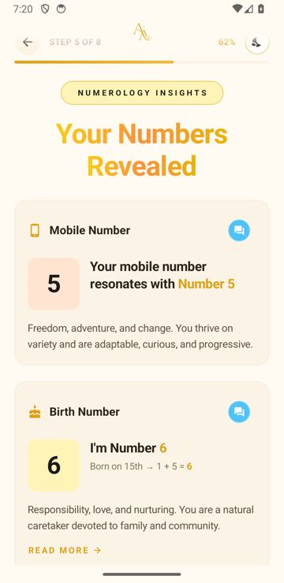
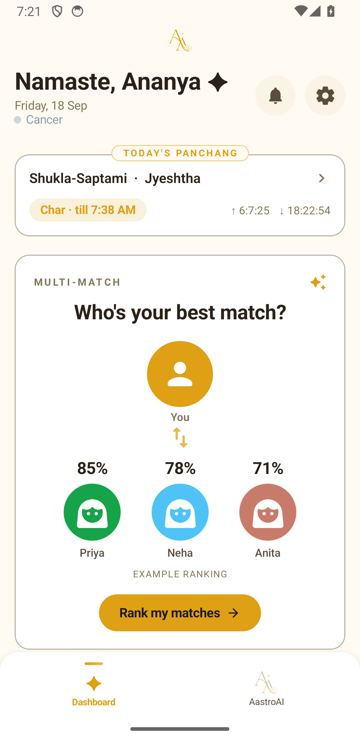

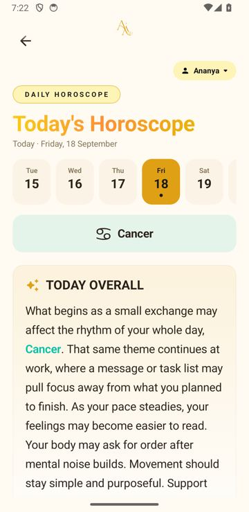
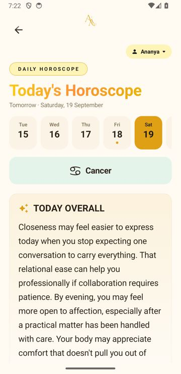
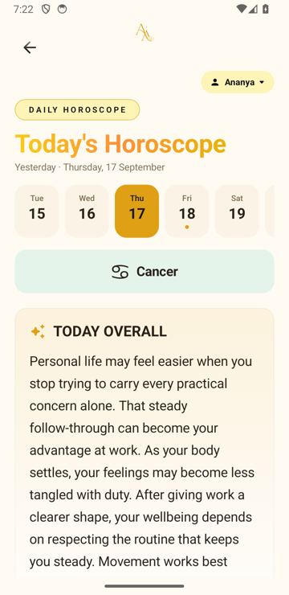
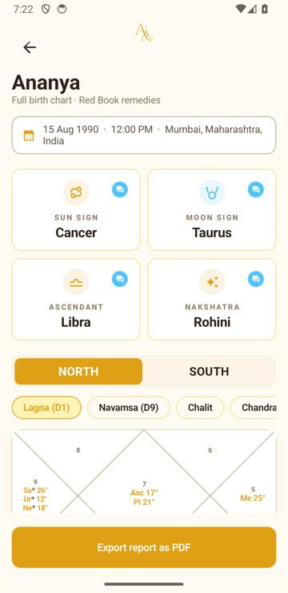

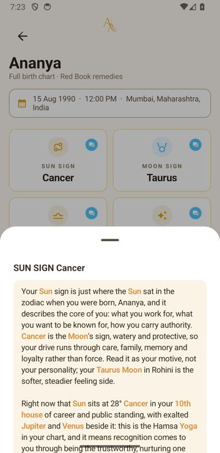
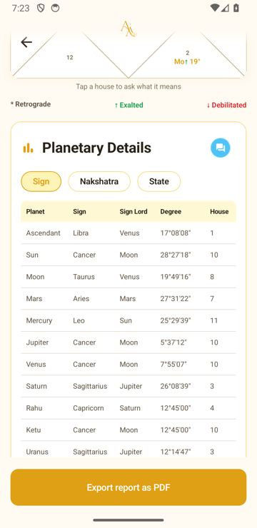
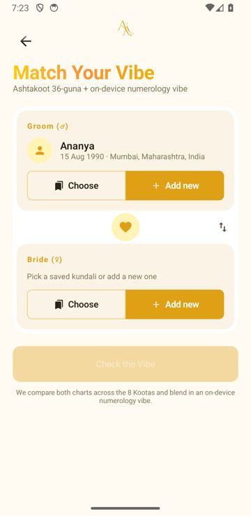
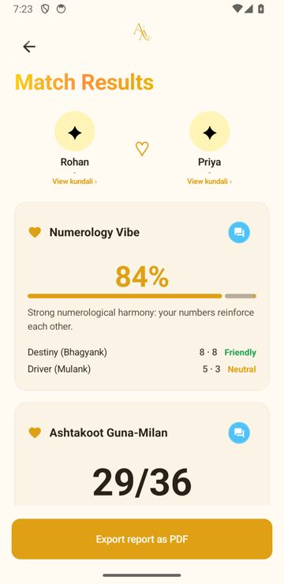
.jpg)
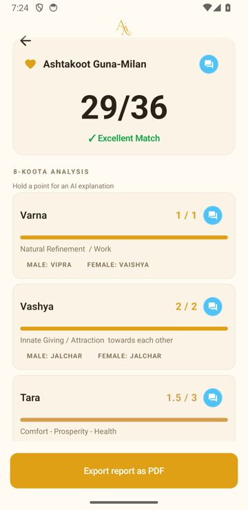
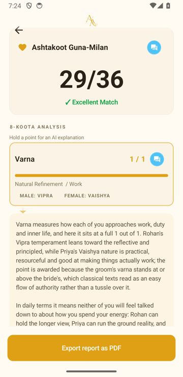
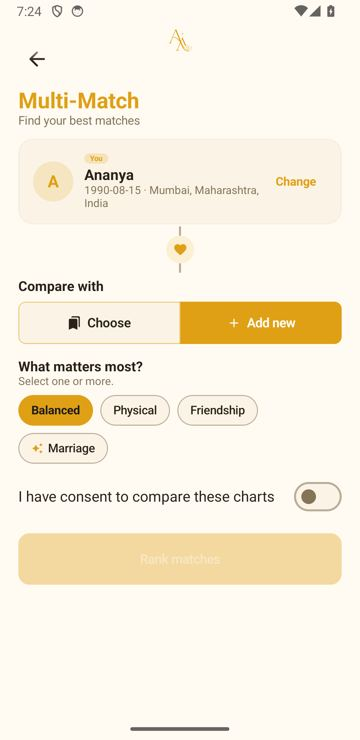

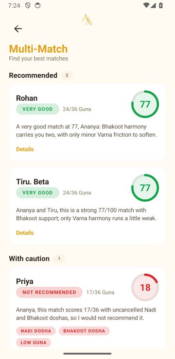
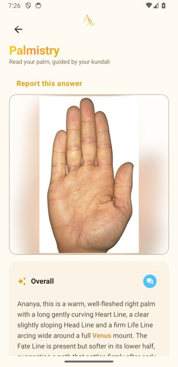
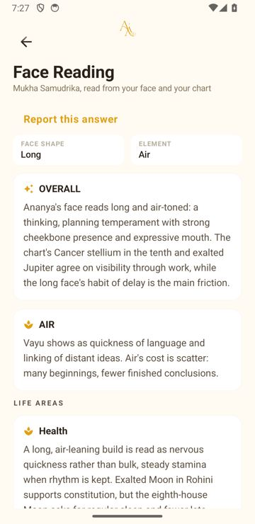
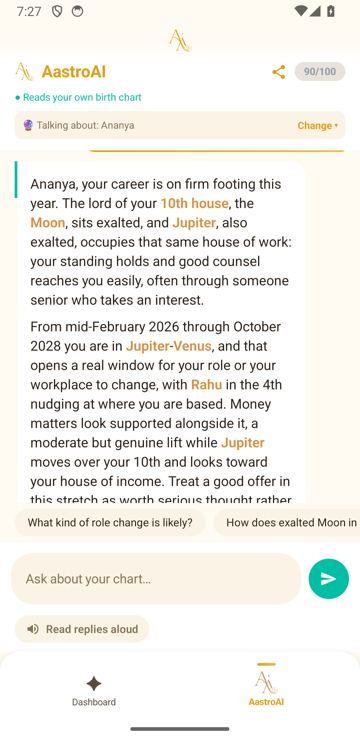

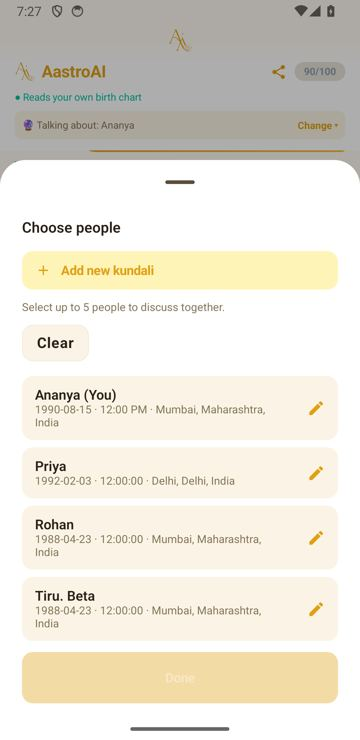
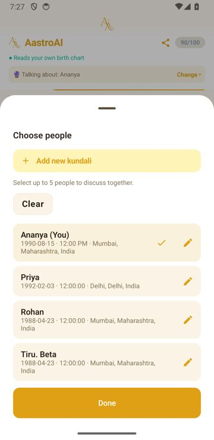
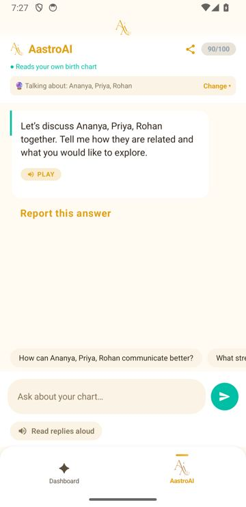
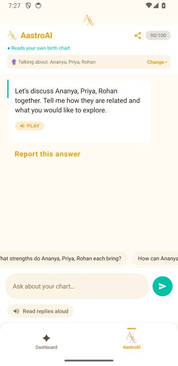
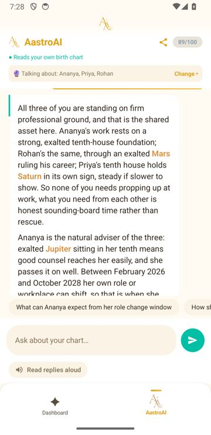
How this was run
- The release APK was driven through adb and uiautomator (
scripts/regression/run_android_regression.py), starting from cleared app data and signing in with the store-review test number. - "Time on screen" runs from the tap until the expected content is visible, so it includes network, parsing and drawing.
- Backend calls were replayed as the app sends them (
scripts/regression/endpoint_latency.py) with a QA test number; chart calls hit the server cache after the first run. - The palm and face photos are Wikimedia Commons images (CC BY-SA); see the fixture SOURCES.md for attribution.